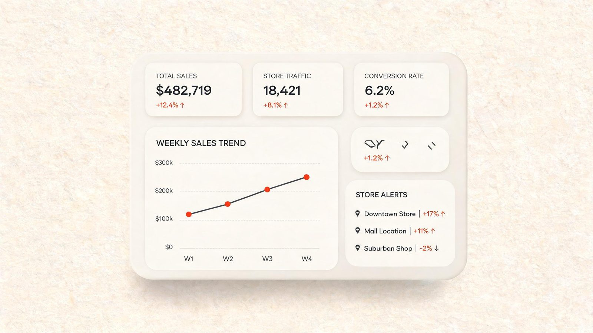
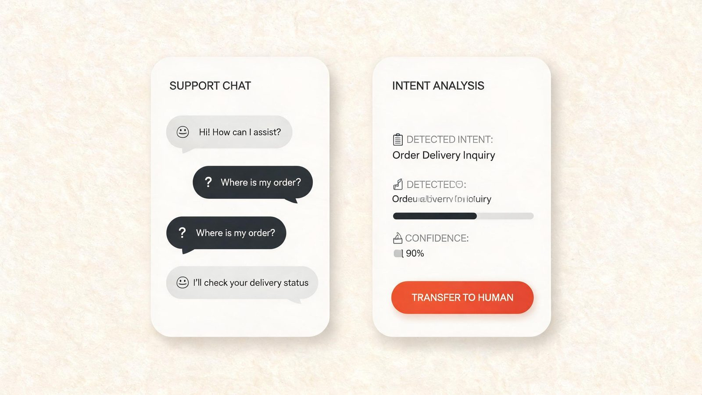
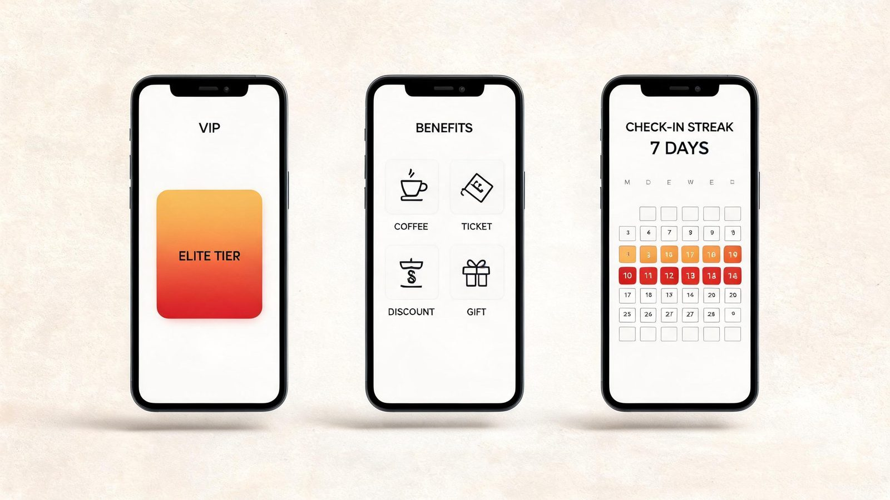
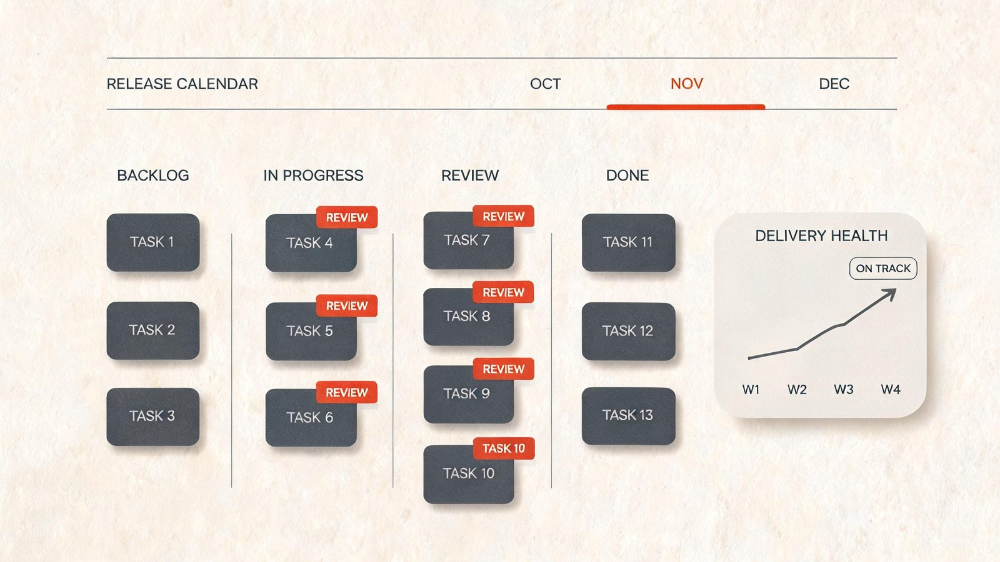

01 / 数据产品
零售数据智能分析平台 · 重构
接手时看板月使用率不足 20%，业务同学宁愿导出 Excel。 重构的核心不是加图表，而是重新定义指标口径与权限模型—— 让区域经理打开首页就能回答「今天哪些门店在报警」。 核心链路从 7 步压缩到 3 步，季度活跃账号增长 3.2 倍。
01
四个我愿意署名的作品——每个都讲清一个问题、一组取舍和一段结果。

01 / 数据产品
接手时看板月使用率不足 20%，业务同学宁愿导出 Excel。 重构的核心不是加图表，而是重新定义指标口径与权限模型—— 让区域经理打开首页就能回答「今天哪些门店在报警」。 核心链路从 7 步压缩到 3 步，季度活跃账号增长 3.2 倍。

02 / AI 应用
电商客户咨询高峰期排队 40 分钟，人工坐席成本占客服预算六成。 我主导了从场景分层开始的完整设计：先让 AI 兜住 60% 的标准问题， 再把「什么时候转人工」做成产品里最重要的一个决策点。 上线后意图识别准确率 91%，人工转接量下降 47%。

03 / 用户增长
会员付费后 30 日留存仅 34%，权益「看得见、用不上」。 我们用三个实验找到了真正影响续费的两类权益， 砍掉了一半的 SKU，把签到、兑换和到期提醒重连成一条行为链路。 90 天后 30 日留存提升至 52%，续费率提升 18%。

04 / 内部工具
需求散落在五个系统里，评审靠口头，交付状态靠问。 这套内部中台把需求池、评审流和发布日历合并成单一事实源， 并为管理者做了一页「交付健康度」视图。 中型需求平均交付周期从 4 周缩短到 9 天，全员周活跃 87%。
02
与其罗列工具，不如说明我在每个能力域里真正做过什么。
从市场洞察到可执行的路线图。习惯先回答「为什么值得做」， 再回答「先做哪一个」——用 RICE 和机会成本说话，而不是用嗓门。
自己写 SQL、自己设计实验。搭过埋点体系，也踩过样本量不足的坑； 相信没有度量的上线只是发布，有度量的上线才是产品决策。
用高保真原型代替长篇 PRD 与团队沟通。 关注信息密度、空状态和错误路径——产品的体面往往藏在这些地方。
在大厂和创业公司都带过跨职能团队。 我的信条是：需求文档的最后一页永远是「我们如何知道它成功了」。
日常工具箱 Figma · Axure · SQL · Tableau · Jira · Confluence · Notion · Python（数据分析）
03
我是 Alan，一名把「让复杂变简单」当作职业信条的产品经理。
过去八年，我从一家电商创业公司的第一位产品经理做起， 经历了从 0 到 1 的混乱与兴奋，也在大平台里学会了在约束中做取舍。 我做过数据产品、AI 应用和内部工具——它们看起来领域不同， 底层却是同一件事：找到真实的问题，然后用最少的版本把它交付出来。
工作之外，我在整理一份「产品经理提问清单」，也在学怎么把飞盘玩得更稳。 如果你恰好在做有意思的产品，欢迎找我聊聊—— 哪怕只是交换一个观点。
04
正在看新的产品机会与合作可能。如果你在做值得投入的事， 一封邮件的代价，可能换来一个靠谱的产品合伙人。